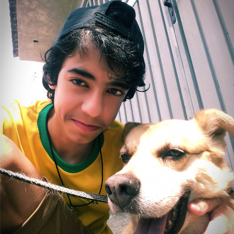
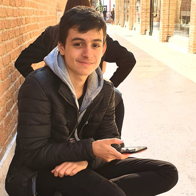

Nosso trabalho
Este é um projeto Interdisciplinar entre os componentes Artes, Literatura e Informática. Esta revista trata de diferentes assuntos sobre Trovadorismo e Arte Colombiana.
O projeto faz parte da Unidade Escolar ETEC Prof. Maria Cristina Medeiros, acontece no 1º Ano do Ensino Médico – Integrado ao Técnico em Informática para Internet, período manhã. Desenvolvido de Junho a Julho de 2020. O objetivo é unir diferentes componentes já citados anteriormente de forma diversificada e já se preparando para o vestibular. O Intuito é além de tudo trabalhar algumas competências socioemocionais como: exercitar a curiosidade, criatividade, aprender a trabalhar em equipe e ao mesmo tempo a autonomia e responsabilidade das entregas semanais do projeto para não prejudicar o grupo de trabalho.
Aluna da Etec Professora Maria Cristina Medeiros, cursando informática para a internet. Sempre busco por aprender coisas novas, no meu tempo livre gosto de ler e escrever, ouvir musicas e desenhar. Tento sempre exercer minha criatividade em todas as atividades diárias, afim de sempre melhorar e aprimorar as coisas ao meu redor.
Cursando informática para internet na ETEC professora Maria Cristina Medeiros. Gosto muito de design, edição de vídeos, etc. Sou extremamente ambicioso, busco a cada dia oportunidades para ser melhor do que ontem e evoluir na minha vida pessoal e profissional.
Cursando informática para internet na ETEC professora Maria Cristina Medeiros. Gosto muito de design, edição de vídeos, etc. Sou extremamente ambicioso, busco a cada dia oportunidades para ser melhor do que ontem e evoluir na minha vida pessoal e profissional.
Atualmente sou aluna da ETEC Prof. Maria Cristina Medeiros, lá estou cursando Informática Para a Internet e o primeiro ano do ensino médio.
Aluno da Etec Professora Maria Cristina Medeiros,Cursando Informatica para Internet.
Professora de Interfaces da Web, Orientadora do projeto Interdiciplinar.
Professora de Língua Portuguesa, Orientadora do projeto Interdiciplinar.
Professora de Artes, Orientadora do projeto Interdiciplinar.
Editorial
Por conta do momento ao qual estamos passando, a “Lado Bom” Decidiu diversificar ao máximo a temática de nossas revistas focando em varias ideias para exercer a criatividade e distrair um pouco da “bagunça’’ do mundo a fora.
Na edição deste mês, vamos abordar o trovadorismo, com diversas curiosidades do assunto. Nada melhor de que aprender um pouco mais, ampliando nossos horizontes para toda a beleza desse movimento literário.
Ademais, não poderia ser deixado de lado nosso lado artístico, com sessões sobre musica artes visuais entre outros.
Alem de tudo isso, abrimos uma brecha para falar sobre a Bolívia, sua cultura, apresentamos curiosidades, e claro, não poderíamos deixar de lado a sessão de gastronomia, com uma receita que certamente irão se deliciar.
Esperamos que nosso conteúdo seja de seu agrado e que aproveitem ao máximo!
Assuntos
Nesse artigo, é abordado a participação da mulher nesse movimento literário da idade média.
Você sabe como era esse são divididos os gêneros literários do trovadorismo? Ou quais são as características de cada um?
Preparamos um Caça-Palavras com carinho, trazendo um pouco de entretenimento aos leitores. O tema é Trovadorismo!
Cultura Boliviana
A cultura boliviana é fortemente influenciada pelos quíchuas, aimarás e pela cultura popular em toda a América Latina. O desenvolvimento cultural está dividido em três períodos distintos: o período pré-colombiano, o período colonial e o período republicano. Importantes sítios arqueológicos, joias de ouro e prata, monumentos de pedra, cerâmicas e tecelagens ainda vêm de várias culturas pré-colombianas importantes. As grandes ruínas incluem Tiwanaku, Forte Samaipata, Inkallaqta e Iskanawaya. O país tem muitos locais de difícil acesso e poucas explorações arqueológicas.
Os espanhóis trouxeram suas próprias tradições religiosas e artísticas, desenvolvidas nas mãos de construtores e artesãos indígenas e mestiços, com um estilo rico e único de arquitetura, pintura e escultura, conhecido como "barroco mestiço"
O período colonial produziu não apenas pinturas de Pérez de Holguín, Flores, Bitti e outros, mas também obras de artesãos qualificados, mas desconhecidos. Desde 1994, uma parte importante da música religiosa barroca durante o período colonial foi restaurada e executada internacionalmente, com grande sucesso.
A Bolívia possui 37 idiomas oficiais faladas pelo seu povo, os principais são o espanhol, seguido do quíchua, aimará e ainda tem mais 34 línguas indígenas.
A Bolívia possui 37 idiomas oficiais faladas pelo seu povo, os principais são o espanhol, seguido do quíchua, aimará e ainda tem mais 34 línguas indígenas. As principais coisas que chamam a atenção no país é a sua arte, música e claro, a vestimenta das mulheres bolivianas cheias de cores.
Curiosidades sobre a Bolívia
A Bolívia é formada por 36 nações e povos indígenas. Além, do espanhol, todos os idiomas são reconhecidos como oficiais. Por isso, o nome oficial do país é Estado Pluri nacional da Bolívia. As línguas nativas mais faladas são o quéchua, o aimara e o guarani. O nome do país é uma homenagem ao militar venezuelano Simón Bolívar, que atuou na independência da Bolívia e de outros países da América do Sul. Até 1825, o país chamava-se República Bolívar.
Apesar de La Paz ser considerada a capital mais alta do mundo, localizada a 3640 metros acima do nível do mar, a verdade é que a capital constitucional é Sucre, sendo La Paz a sede do governo.s.
O maior deserto de sal do mundo fica na Bolívia, na cidade de Uyuni, com 10.582 quilômetros quadrados e, acredite, o salar fica a 3800 metros de altitude na Cordilheira dos Andes. O Salar de Uyuni tem uma enorme reserva de lítio, metal caro e bastante procurado porque é usado na fabricação de baterias para dispositivos eletrônicos.
- Cuzco era a capital do Império Inca na época da chegada dos primeiros colonos europeus. Uma informação adicional: o primeiro europeu a chegar no território da atual Bolívia foi Diego de Almagro, em 1535. s
Bolívia é um país sem mar, mas nem sempre foi assim. Durante a Guerra do Pacífico, no final do século XIX, o país foi obrigado a ceder a província de Antofagasta ao Chile, perdendo sua única área costeira. Até hoje o assunto é tratado como um problema nacional, e existe até um museu dedicado ao mar na cidade de La Paz. Não tem mar com água, mas tem um mar de sal, em Uyuni.
É comum ver bolivianos andando pelas ruas mascando folhas. Sim, são as famosas folhas de coca, um dos meio mais naturais de combater os efeitos da altitude no organismo. As folhas de coca podem ser encontradas em quase todos os lugares na Bolívia. Além de mastigarem as folhas, os indígenas fazem chá, rebuçados e souvenires com elas.
Situado na fronteira entre Peru e Bolívia e com cerca de 8300 quilómetros quadrados, o lago Titicaca é o lago navegável mais alto do mundo. Ele está a 3821 metros de altitude, também na cordilheira andina.
A gastronomia Boliviana
A gastronomia Boliviana, o que dizer sobre a Culinária de um país onde se encontram desertos, florestas e picos nevados? .
A culinária Boliviana pode não ser tão popular quanto suas "parentes" as comidas típicas peruanas e mexicanas, mas com certeza muitos dos pratos valem a pena serem experimentados; por ser um país diverso em línguas, tradições e gostos a comida típica varia de acordo com a região, tendo 9 estados possuindo seus próprios pratos típicos.
A gastronomia Boliviana é lembrada por ter grande influência espanhola e Indígena, tendo até um próprio festival dedicado á ela em São Paulo chamado "A Feira da Kantuta", onde se pode provar e conhecer um pouco mais dessa bela cultura do país.
saltenha boliviana
Ingredientes - Massa:
Ingredientes - Recheio
Modo de Preparo - Massa:
Ingredientes - Recheio
Exposições
Fale Conosco!
beatrizzarap@gmail.com
ana.luizaolifer@gmail.com
yguilhermegutierrez@gmail.com
gabi.akiko@gmail.com
gabrielparra984@gmail.com
(11) 4825-4470
R. Bélgica, 88 - Jardim Alvorada, Ribeirão Pires - SP | CEP: 09402-060